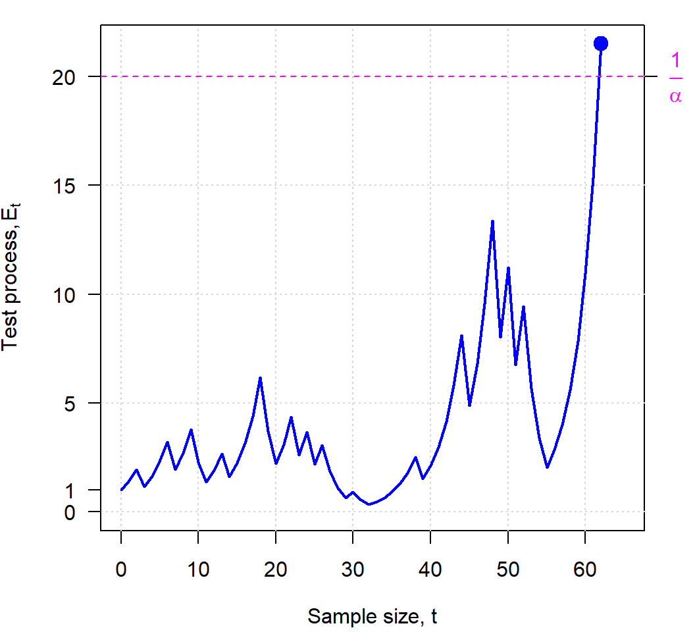
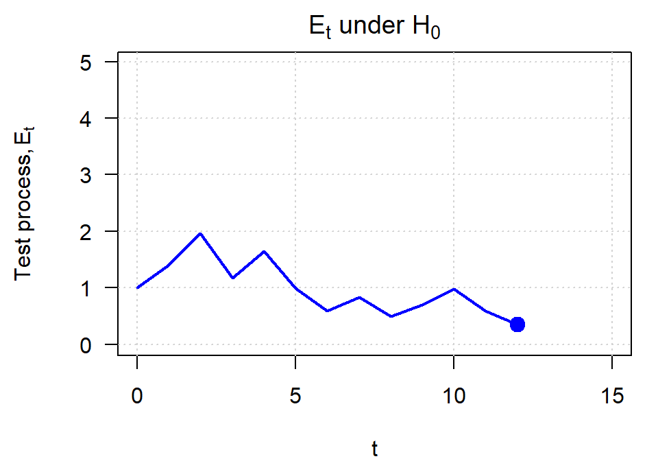
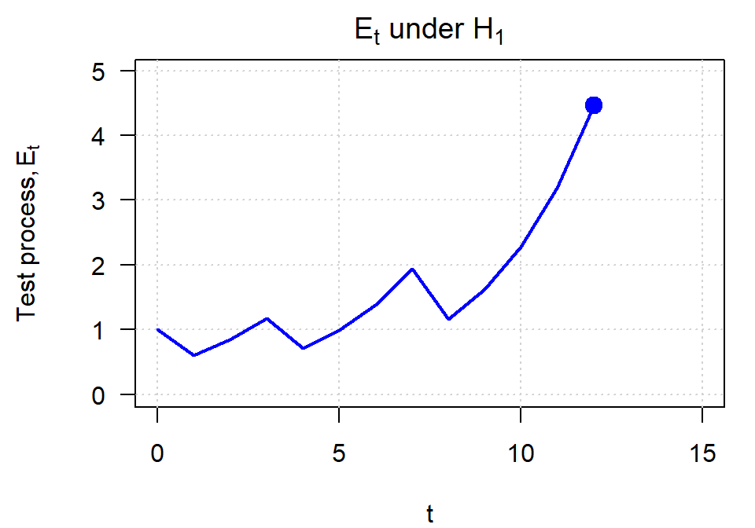
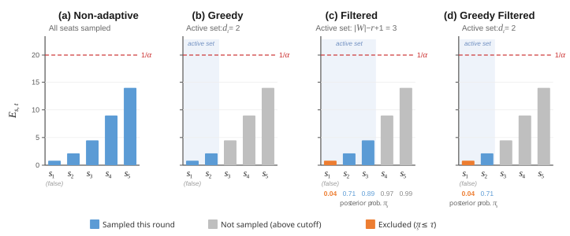
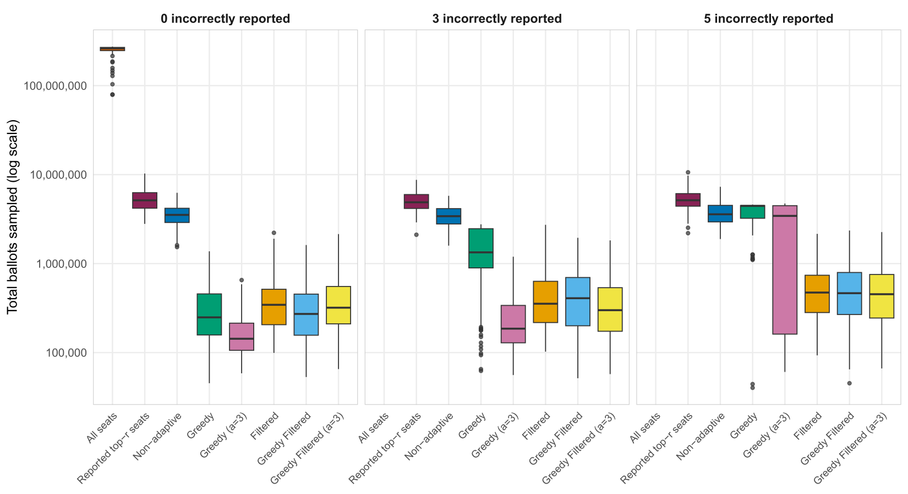
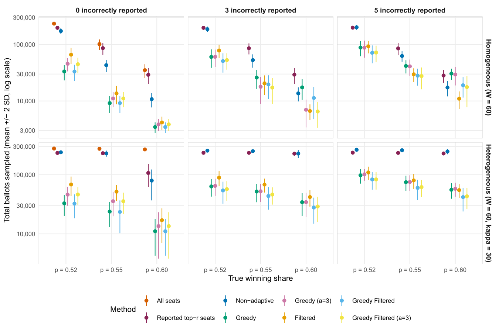

Auditing majorities rather than seats
E-Vote-ID 2026
8 October 2026
TODO
Australian Research Council (ARC):
Standard RLA: certify winner of every seat (s \in \mathcal{S})
New focus: certify a winning majority of seats (r = \left\lfloor \frac{|\mathcal{S}|}{2} \right\rfloor + 1)
Pool evidence across seats to reduce total ballot inspections
RLAs of single contests
SHANGRLA, ALPHA,…
Safe, anytime-valid testing
E-processes, test supermartingales,…
Partial conjunction testing
Replicability analysis,…
Auditing a parliamentary majority
Mohanty et al. (2019), E-Vote-ID 2019
Hypotheses:
Observe all cast ballots \rightarrow certainty about outcome
Observe a random sample \rightarrow statistically infer outcome
Risk-limiting
Set the desired level of statistical confidence
SHANGRLA (Stark 2020)
ALPHA (Stark 2023)
Statements: \mathcal{S} = \{S_1, S_2, \dots\}
Example:
How to test “any” or “all” of these?
This is a conjunction
Need to reject all of the complementary nulls, \bar{S}_j
Example: SHANGRLA
The S_j are called assertions
This is a disjunction
Need to reject at least one of the complementary nulls, \bar{S}_j
Example: AWAIRE
This is a partial conjunction
Example: replicability analysis
Used for assessing scientific findings across several studies
The null can be expressed as:
H_0 = H_{r/\mathcal{S}} = \bigcup_{\substack{\mathcal{C} \subset \mathcal{S} : \\ |\mathcal{C}| = |\mathcal{S}| - r + 1}} \bigcap_{j \in \mathcal{C}} \bar{S}_j
We need to reject all of the inner intersections: H_{1/\mathcal{C}} = \bigcap_{j \in \mathcal{C}} \bar{S}_j
Each is the null of a disjunction (“any”)
| “Any” | “Some” | “All” | |
|---|---|---|---|
| Type | Disjunction | Partial conjunction | Conjunction |
| H_0 notation | H_{1/\mathcal{S}} | H_{r/\mathcal{S}} | H_{|\mathcal{S}|/\mathcal{S}} |
| H_1 meaning | At least 1 | At least r | At least |\mathcal{S}| |
Define:
Null hypothesis (partial conjunction): H_{r/\mathcal{W}}
“fewer than r seats were truly won by the winning party”



Let E_0, E_1, E_2, \dots be an e-process.
For any \alpha > 0, \Pr\left(\max_t (E_t) \geqslant \frac{1}{\alpha}\right) \leqslant \alpha
\Rightarrow risk limit = \alpha
Statements: \mathcal{S} = \{S_1, S_2, \dots\}
Test processes:
How do we test combinations?
Recipes (for nulls):
H_0 = \bigcup_j \bar{S}_j \quad \longrightarrow \quad E_t = \min_j E_{j,t}
H_0 = \bigcap_j \bar{S}_j \quad \longrightarrow \quad E_t = \prod_j E_{j,t}
Let E_{s,t} be a test process for seat s.
Test process for parliamentary majority r: E_{r/\mathcal{W},t} = \min_{\substack{\mathcal{C} \subset \mathcal{W} : \\ |\mathcal{C}| = |\mathcal{W}| - r + 1}} \prod_{s \in \mathcal{C}} E_{s,t} = \prod_{s=1}^{|\mathcal{W}|-r+1} E_{(s),t}
E_{(1),t} \leqslant E_{(2),t} \leqslant \dots are the order statistics of E_{s,t} at time t.
Risk-limiting
These are all e-processes, Ville’s inequality applies. (Theorem 1 in paper)
Direct e-process combination (our method)
Previous approach (Mohanty et al. 2019)
Converted seat e-processes into p-values P_{s,t} = 1/E_{s,t}
Combined p-values using Fisher’s method
Uses threshold \exp\left(\frac{1}{2}\chi^2_{2k, 1-\alpha}\right) for k = |W| - r + 1
For \alpha = 0.05 and k = 11 (ten spare seats):
E-process threshold is 1/\alpha = 20
Fisher threshold is \approx 2.3 \times 10^7, requiring \sim 5.7\times more samples ⚠️
Do sampling in ‘rounds’
In each round, can choose whether to ‘ignore’ some seats (do not sample ballots)
Goal: minimise total ballots sampled

All seats 🪑 🪑 🪑 🪑
Reported top-r seats 💺 💺
100 seats (majority r = 51)
60 reported winning seats
2 candidates/seat
5000 ballots/seat
Vote shares:

Need coalition info ahead of time
‘Midstream’ certification
Large-batch sampling
Comparison audits
Partial conjunction framework enables certifying a majority
Efficient: up to 1,000\times reduction in ballot inspections on a real-world national election dataset
Flexible: allows different audit styles and sampling designs
Future directions:
Improved sampling designs and test process tuning
Use reported info (margins)
Determine optimal sample sizes for large-batch rounds
Slides 🖥️ https://dvukcevic.github.io/rla-majorities-evoteid2026/
Paper 📑 https://arxiv.org/abs/2607.21082
Software 💽 https://github.com/freejstone/RLA_parliamentary_majorities_code
Benjamini, Heller (2008). Screening for partial conjunction hypotheses. Biometrics 64(4):1215-1222.
Ek, Stark, Stuckey, Vukcevic (2023). Adaptively weighted audits of instant-runoff voting elections: AWAIRE. In: Electronic Voting. E-Vote-ID 2023. Lecture Notes in Computer Science 14230:35–51.
Mohanty, Culnane, Stark, Teague (2019). Auditing Indian elections. In: Electronic Voting. E-Vote-ID 2019. Lecture Notes in Computer Science 11759:150–165.
Stark (2020). Sets of half-average nulls generate risk-limiting audits: SHANGRLA. In: Financial Cryptography and Data Security. FC 2020. Lecture Notes in Computer Science 12063:319–336.
Stark (2023). ALPHA: Audit that learns from previously hand-audited ballots. Ann. Appl. Stat. 17(1):641–679.
M_{s,j,t} = \prod_{i=1}^{n_s(t)} \left(1 + \lambda_{s,j,i}(X_{s,j,i} - \mu_{s,j,i})\right)
\pi_s = \min_j \Pr(\theta_{s,j} > 1/2 \mid \mathcal{F}_t)
